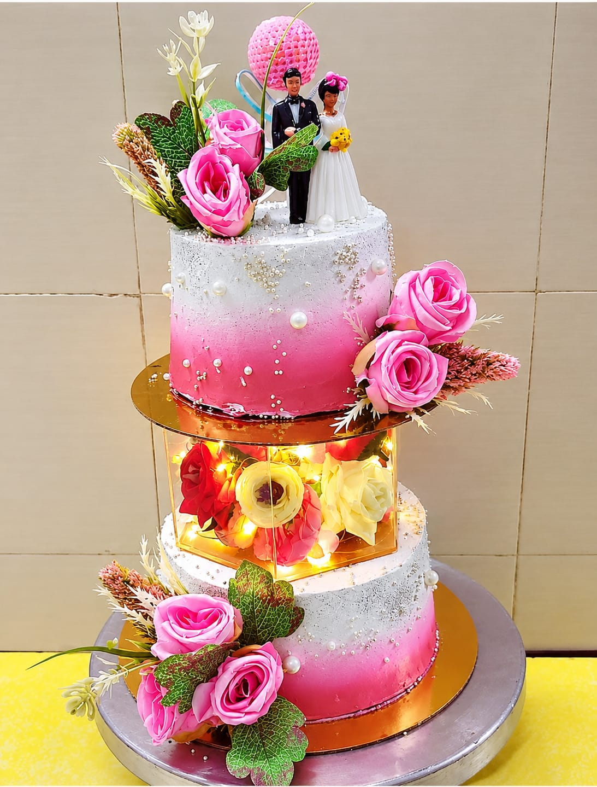

Custom Birthday Cakes
Choose a favourite theme, colour palette, character, hobby or design reference for a birthday celebration.
Looking for a Customised Cake in Ahmedabad that reflects your celebration and personal style? Share your theme, preferred flavour, colours and design inspiration with Minaxi Cake House. From birthdays and anniversaries to weddings and special gatherings, let's plan a cake around your occasion.

Minaxi Cake House accepts enquiries for customised celebration cakes in Ahmedabad. Share your occasion, preferred flavour, design idea, number of guests and required date through the custom order form. The team will connect with you on WhatsApp to discuss requirements, availability and pricing before the order is confirmed.
Some celebrations call for more than an ordinary dessert. You may have a favourite colour combination, a character theme, a reference photograph or a simple idea you want to make special. If you are searching for a Customised Cake in Ahmedabad, share your occasion and the design you would love to see. Include your preferred flavour, guest count, celebration date and decoration ideas to help us understand what you have in mind.
Every design has its own requirements, so the final look, preparation time and price depend on the selected size, flavour, decoration and level of customisation. We will discuss the details with you before confirming your order.
A Customised Cake in Ahmedabad can add a thoughtful touch to birthdays, weddings, anniversaries and other special moments. Explore a few ideas and share the style that suits your event.
Choose a favourite theme, colour palette, character, hobby or design reference for a birthday celebration.

Share your event details, guest count and preferred style for a cake that complements the occasion.
Describe a design or share inspiration details to discuss theme-based decorations and cake options.

Celebrate achievements, family gatherings, festive occasions and milestones with a thoughtful personal touch.
A custom cake begins with understanding your idea and turning the details into a practical order plan. Minaxi Cake House can discuss your preferred design, flavour and celebration requirements before you confirm.
Share your theme, colours, preferred flavour and inspiration so your requirements are understood.
All cakes prepared at Minaxi Cake House are eggless.
Enquire about birthday, wedding, anniversary and designer cake requirements.
Pricing depends on size, flavour, design, decoration and customisation. The final price is shared before confirmation.
Your website enquiry opens WhatsApp, where you can review and send your cake requirements.
A Customised Cake in Ahmedabad order starts with your occasion and design details. Follow these steps to share the information needed for an enquiry.
Choose the occasion, such as a birthday, wedding, anniversary or another celebration.
Tell us about your preferred theme, colours, message, design and any inspiration image.
Provide your preferred flavour, approximate guest count and budget so the requirements can be discussed.
Share when you need the cake. Please enquire at least one day in advance; detailed designs may need more preparation time.
Discuss availability, final design and price through WhatsApp before confirming. A 50% advance payment is required to reserve the order.
Cake orders start from 250 grams. The remaining balance is paid as agreed when the order is completed.
Based in Raipur Chakla, Ahmedabad Old City, Minaxi Cake House welcomes enquiries from customers planning celebrations across Ahmedabad. For a Customised Cake in Ahmedabad, share your area when discussing the order; delivery charges are calculated separately according to the delivery location.
Consider the occasion, number of guests, preferred flavour, design complexity and preparation time when planning. Providing these details early makes it easier to discuss what may be possible for your celebration.
To order a Customised Cake in Ahmedabad, visit the custom orders page and share your contact details, celebration date, occasion, flavour, guest count and design idea. Your enquiry opens in WhatsApp so you can review and send it.
Yes. All cakes prepared at Minaxi Cake House are eggless.
Yes. Describe your inspiration or share a link or reference details through the custom order enquiry form.
The price depends on cake size, flavour, design, decoration and customisation. The final price is shared before the order is confirmed.
Please enquire at least one day in advance. Detailed or customised designs may need additional preparation time, so earlier enquiry is recommended.
Yes. A 50% advance payment is required to confirm and reserve the cake order. The remaining balance is paid as agreed when the order is completed.
No. Delivery charges are calculated separately according to the delivery location. Share your area when making an enquiry.
Cake orders start from 250 grams. Available varieties and options can be discussed according to your requirements.
Share your occasion, flavour preference, design inspiration and required date. We will connect with you on WhatsApp to discuss the details, availability and pricing.